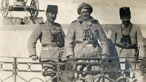

Askeri Kariyeri ve İlk Savaşlar
Türkiye Cumhuriyeti'nin Kuruluşu
Atatürk'ün Askeri Kariyeri ve Katıldığı Savaşlar
Atatürk’ün Hayatını Anlatan Belgesel

Mustafa Kemal Atatürk, 1881 yılında Selanik'te doğdu. Babası Ali Rıza Efendi, annesi Zübeyde Hanım’dır. Küçük yaşta babasını kaybeden Mustafa Kemal, annesiyle birlikte zorluklar içinde büyüdü. İlk öğrenimini Şemsi Efendi Mektebi’nde aldıktan sonra Selanik Askeri Rüştiyesi’ne başladı. Burada matematik öğretmeni ona “Kemal” adını verdi. Daha sonra Manastır Askeri İdadisi ve İstanbul’daki Harp Okulu’nda eğitimine devam etti ve 1905 yılında Kurmay Yüzbaşı olarak mezun oldu.
Mezun olduktan sonra Şam’da 5. Ordu emrinde göreve başladı. Trablusgarp ve Balkan Savaşları’nda görev aldı. En büyük başarısı, 1915 Çanakkale Savaşı’nda Anafartalar Grup Komutanı olarak kazandığı zaferdir. Bu başarı, onun askeri dehasını dünyaya göstermiştir.
1. Dünya Savaşı sonrası Osmanlı işgal altına girmişken, 19 Mayıs 1919'da Samsun’a çıkan Mustafa Kemal, Kurtuluş Savaşı'nı başlattı. Amasya, Erzurum ve Sivas kongreleri ile halkı örgütledi. 23 Nisan 1920’de Türkiye Büyük Millet Meclisi’ni açtı. Sakarya ve Büyük Taarruz zaferleri ile düşman yurttan atıldı.
29 Ekim 1923’te Cumhuriyet ilan edildi, Mustafa Kemal ilk Cumhurbaşkanı oldu. Eğitim, hukuk, kadın hakları, kıyafet, takvim ve dil alanlarında birçok devrim yapıldı. Türkiye'yi çağdaş uygarlık seviyesine ulaştırmayı hedefledi.
1937'den itibaren sağlık sorunları artan Atatürk, 1938’de siroz hastalığına yakalandı. Doktorların uyarılarına rağmen görevlerini bırakmadı. 10 Kasım 1938 sabahı saat 09.05’te Dolmabahçe Sarayı’nda hayatını kaybetti. Ardında güçlü, bağımsız ve modern bir Türkiye bıraktı.
Atatürk, genç yaşta Osmanlı ordusunda görev aldı ve çeşitli savaşlarda önemli roller üstlendi.
Trablusgarp Savaşı (1911-1912): Osmanlı’nın Kuzey Afrika’daki topraklarını korumak için savaştı.
Balkan Savaşları (1912-1913): Selanik ve Edirne’nin geri alınması için mücadele etti.
Çanakkale Savaşı (1915): Anafartalar Kahramanı olarak büyük zafer kazandı.
Doğu Cephesi (1916-1917): Ruslara karşı Muş ve Bitlis’i geri aldı.
Filistin ve Suriye Cepheleri (1917-1918): Geri çekilen Osmanlı ordusunu düzenli bir şekilde savundu.
Bu savaşlar, Mustafa Kemal’in askeri zekasını ve liderlik yeteneklerini ortaya koymuştur.